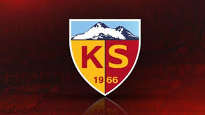

Kayserispor
Kayserispor, Kayseri'nin Süper Lig'de mücadele eden profesyonel futbol takımıdır. 1966 yılında kurulan bu köklü kulüp, şehrin futbol geleneğini devam ettiriyor. Kayserispor, maçlarını Kadir Has Stadyumu'nda oynar ve renkleri sarı-kırmızı olarak bilinir.
Maç Bilgileri
Kayserispor'un maç takvimine ve son maç sonuçlarına aşağıdaki linkten ulaşabilirsiniz: